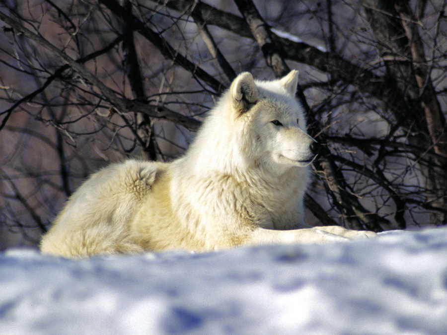

gray wolves

The gray wolf i a larg canine that lives in eurasia and north america, they mostly hunt large hoofed mammals and most medium mammals they can catch, ther fur is mostly a mix of gray and black
Timber wolf
Timber wolf or Eastern wolf is a wolf native to the grear lakes region and canada, ther diet is mostly medium sized pray like deer and beavers, but in voyageurs national park som packs of wolves have also been seen eating blueberries

Arctic wolf
Arctic wolf or polar wolf is native to hige arctic tundra of canadas queen elizabeth islands ther diet is muskoxen and arctic hares and any small to medium animals they can find,